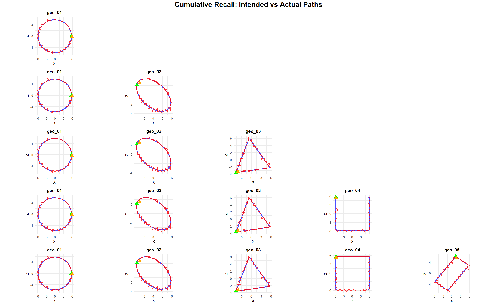

Unity prototype
Attractor Learning Prototype
A Unity system where a moving state point learns waypoint patterns as attractor wells, then attempts recall under noise, cue fade, and interference.
- Implemented C# learning, force-field, and recall components.
- Logged intended vs actual paths for tuning and analysis.
- Built designer-facing parameters for depth, width, noise, and cue timing.
Unity
C#
Physics
System Design
GitHub Code